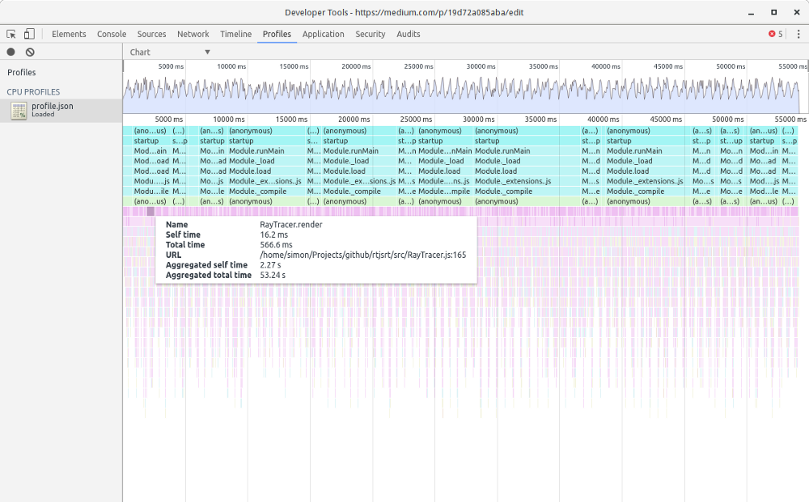

| data-transition-duration: | |
|---|---|
| 400 | |
| Author: | Simon Werner |
| skip-help: | false |
| css: | style.css |
Note
- Preparation:
- Network
Optimising Node.js for Speed
DISCLAIMER #1
- Optimising is bad for your health
- Don't try this at home children
- Don't believe what I say
- Don't write a RayTracer in JavaScript
- Poor performace !== bad programming
DISCLAIMER #2
Don't make assumptions
DISCLAIMER #3
Donald Knuth:
premature optimization is the root of all evil.
Optimising Node.js for Speed
- WTF is RayTracing?
- The Optimisation Process
- Benchmarking and Profiling
- Understand the compiler
- Multi-threading
- Node-gyp
- Upcoming JavaScript Features
WTF is RayTracing?
WTF is RayTracing?
- Photo realistic scenes
- Highly mathematical
- Computationally intensive
- Not your standard Node.js process
- The un-optimised RayTracer
The Optimisation Process
The Optimisation Process
- Start with clean code
- Test using a benchmark / profiler
- Identify the bottleneck
- Update the code
- Repeat steps 2. to 5.
- STOP
Benchmarking and Profiling
Benchmarking vs Profiling
Profiling
- Looks at whole application workflow
- Used to find bottle necks
Benchmark
- measure performance (before)
- improve code
- measure performance (after)
Benchmarking with Simple Timers
const start = new Date.getTime(); // ... your slow code ... const end = new Date.getTime(); console.log(`Time taken (ms): ${end - start}`); // Time taken (ms): 1245
performance.now()
- native in browser
- npm package for Node.js
The V8 profiler
V8 comes with built-in profiler:
const profiler = require('v8-profiler'); if (startProfiling === true) { profiler.startProfiling(); } // ... let code run for a few seconds/minutes if (stopProfiling === true) { profiler.stopProfiling() .export(function exportFunction(err, res) { const fs = require('fs'); fs.writeFileSync('app.cpuprofile', res); }); }
The V8 profiler
Open in Chrome developer tools
Improving .dot():
// Before - slow function dot(v, w) { return (v[0] * w[0] + v[1] * w[1] + v[2] * w[2]); } // After - 2x times faster Vector.prototype.dot = function(w) { return this.x * w.x + this.y * w.y + this.z * w.z; };
Other profiling tools
Comprehensive suites (client to db):
- New Relic (img)
- AppDynamics
- Dynatrace
Low level:
- IRHydra² - shows generated assembly code
- Linux Kernel (perf, dtrace, etc)
Understand the compiler
Understand the compiler
The current V8 compiler

The current V8 compiler
The future V8 compiler
ES6 + New Features
- let, const slower than var
- new JavaScript features tend to be slow
JSPerf.com
- Benchmark code snippets
- Performance quirks
- Some tests are very poorly written
Avoid polymorphic classes
Difficult for compiler to optimise.
function add(a, b) return a + b; } add(1, 2); // OKAY: Starts as monomorphic add(2, 3); // OKAY: Still monomorphic add('x', 'y'); // BAD: Now becomes polymorphic
Avoid Factory Functions
function createValueObject() { var x = 0; function get() { return x; } function add(y) { x += y; } return { get: get, add: add, }; }
forEach vs for
values.forEach(add); // vs for (i = 0; i < values.length; i++) { add(values[i]); }
Multi-threading
Multi-threading in Node.js
By default JavaScript is single threaded
Multi-threading:
- Browser: Web Workers
- Node.js: Cluster (native)
- npm library: workerjs
Master / Worker
master.js:
const Worker = require('workerjs'); const worker1 = new Worker('myWorker.js'); worker1.addEventListener('message', (workerMsg) ==> { // ... do something with the result }); worker1.postMessage('Start your work');
myWorker.js:
this.addEventListener('message', function(e) { if (e.message === 'Start your work') { // Do lots of work const result = rayTrace(); this.postMessage(result); } }, false);

{kind=link}
node-gyp
node-gyp
- Binds C++ to V8
- Used to develop core Node.js modules
- Many npm libraries use it
- Can use for:
- binding to external libraries
- performance improvements
node-gyp - drawbacks
- Need to know C++
- Significant effort for writing C++/JS interface
- May need to maintain 2 code bases
- Need to unpack and pack values
Let's write this in C++
module.exports.hello = () => 'world';
File structure
\addon.cc
\bindings.gyp
\hello.js
\build\
addon.cc:
#include <node.h> namespace demo { using v8::FunctionCallbackInfo; using v8::Isolate; using v8::Local; using v8::Object; using v8::String; using v8::Value; void Method(const FunctionCallbackInfo<Value>& args) { Isolate* isolate = args.GetIsolate(); args.GetReturnValue().Set(String::NewFromUtf8(isolate, "world")); } void init(Local<Object> exports) { NODE_SET_METHOD(exports, "hello", Method); } NODE_MODULE(addon, init) } // namespace demo
binding.gyp:
{ "targets": [ { "target_name": "addon", "sources": [ "addon.cc" ] } ] }
hello.js:
const addon = require('./build/Release/addon'); console.log(addon.hello()); // "world"
Upcoming Features
SIMD
Single Instruction Multiple Data

// Classic method Vector.prototype.add = function(w) { this.x += w.x; this.y += w.y; this.z += w.z; }; // SIMD Vector.prototype.add = function(w) { this.v = this.v.add(w); };
Very slow in V8, currently.
Links
https://medium.com/@psiphi75/optimising-node-js-for-speed-part-1-19d72a085aba
https://medium.com/@psiphi75/optimising-node-js-for-speed-part-2-56e304bdc50f
https://medium.com/@psiphi75/optimising-node-js-for-speed-part-3-aebd1c37fe6c